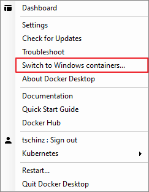
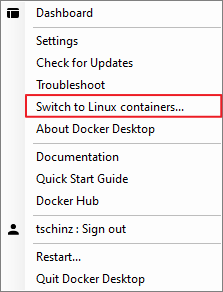

Docker¶
Content
Introduction¶
Docker is a set of platform as a service (PaaS) products that use OS-level virtualization to deliver software in packages called containers. Containers are isolated from one another and bundle their own software, libraries and configuration files; they can communicate with each other through well-defined channels. All containers are run by a single operating system kernel and therefore use fewer resources than virtual machines.
Additional Information¶
Windows vs Linux Containers¶
You cannot run Linux and Windows container at the same time. You have to choose and switch between them.

|

|
Switch between Hyper-V and VirtualBox¶
In order to “quickly” switch between them use the commands below. But a restart if necessary in any case.
bcdedit /set hypervisorlaunchtype off
bcdedit /set hypervisorlaunchtype auto
Docker for Windows and VirtualBox¶
Docker for Windows requires two Windows features activated:
Hyper-VVirtual Machine PlatformWindows Hypervisor Platform

Once activate normal Virtualbox images don’t work anymore because the default Type 2 Hypervisor cannot run im parallel with Type 1 Hypervisor Hyper-V. Luckily since Virtualbox v6.0 you can select Hyper-V as default Hypervisor for any image.
Important
When run Virtualbox image run under Hyper-V there is a significant performance penalty. (practically unusable)

Once a image is launched a new icon in the iconbar appears (tortoise with a V)